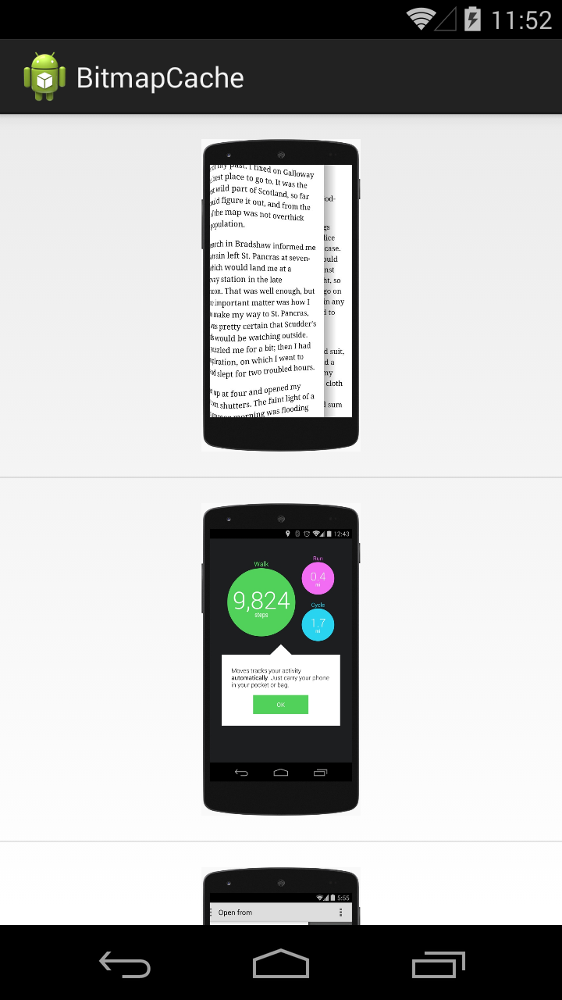

В этом уроке:
- используем memory-кэш
- используем библиотеку Picasso
На прошлом уроке мы читали одно изображение с SD в Bitmap, уменьшали его и отображали на экране. В этом уроке сделаем чуть сложнее: будем читать несколько изображений и отображать их в списке.
Алгоритм работы списка, думаю, всем хорошо знаком. Каждый раз при появлении очередного пункта списка на экране адаптер заполняет его элементы данными. Т.е. если мы собираемся отображать картинки, то при каждом появлении очередного пункта списка нам необходимо читать изображение с диска и отображать его. Но процедура чтения изображения занимает определенное время. Если каждый раз читать заново картинку, то список будет работать с весьма ощутимыми тормозами.
Давайте создадим такую реализацию и убедимся в этом.
Создадим проект:
Project name: P1611_BitmapCache
Build Target: Android 4.4
Application name: BitmapCache
Package name: ru.startandroid.develop.p1611bitmapcache
Create Activity: MainActivity
res/values/dimens.xml:
<?xml version="1.0" encoding="utf-8"?>
<resources>
<dimen name="image_size">200dp</dimen>
</resources>res/layout/main.xml:
<?xml version="1.0" encoding="utf-8"?>
<RelativeLayout
xmlns:android="http://schemas.android.com/apk/res/android"
xmlns:tools="http://schemas.android.com/tools"
xmlns:android1="http://schemas.android.com/apk/res/android"
android:layout_width="match_parent"
android:layout_height="match_parent">
<ListView
android1:id="@+id/lvImages"
android1:layout_width="match_parent"
android1:layout_height="match_parent">
</ListView>
</RelativeLayout>На экране только список
res/layout/list_item.xml:
<?xml version="1.0" encoding="utf-8"?>
<RelativeLayout
xmlns:android="http://schemas.android.com/apk/res/android"
xmlns:tools="http://schemas.android.com/tools"
android:layout_width="match_parent"
android:layout_height="match_parent"
android:padding="16dp">
<ImageView
android:layout_centerInParent="true"
android:id="@+id/imageView"
android:layout_width="@dimen/image_size"
android:layout_height="@dimen/image_size">
</ImageView>
</RelativeLayout>Пункт списка содержит ImageView, который отобразит картинку
Создадим класс Utils.java в основном пакете. И добавим в него уже знакомые нам по прошлому уроку методы.
Utils.java:
package ru.startandroid.develop.p1611bitmapcache;
import android.graphics.Bitmap;
import android.graphics.BitmapFactory;
public class Utils {
public static Bitmap decodeSampledBitmapFromResource(String path,
int reqWidth, int reqHeight) {
// Читаем с inJustDecodeBounds=true для определения размеров
final BitmapFactory.Options options = new BitmapFactory.Options();
options.inJustDecodeBounds = true;
BitmapFactory.decodeFile(path, options);
// Вычисляем inSampleSize
options.inSampleSize = calculateInSampleSize(options, reqWidth,
reqHeight);
// Читаем с использованием inSampleSize коэффициента
options.inJustDecodeBounds = false;
// Используем конфигурацию без прозрачности
options.inPreferredConfig = Bitmap.Config.RGB_565;
return BitmapFactory.decodeFile(path, options);
}
public static int calculateInSampleSize(BitmapFactory.Options options,
int reqWidth, int reqHeight) {
// Реальные размеры изображения
final int height = options.outHeight;
final int width = options.outWidth;
int inSampleSize = 1;
if (height > reqHeight || width > reqWidth) {
final int halfHeight = height / 2;
final int halfWidth = width / 2;
// Вычисляем наибольший inSampleSize, который будет кратным двум
// и оставит полученные размеры больше, чем требуемые
while ((halfHeight / inSampleSize) > reqHeight
&& (halfWidth / inSampleSize) > reqWidth) {
inSampleSize *= 2;
}
}
return inSampleSize;
}
}MainActivity.java:
package ru.startandroid.develop.p1611bitmapcache;
import java.io.File;
import android.app.Activity;
import android.content.Context;
import android.graphics.Bitmap;
import android.os.Bundle;
import android.os.Environment;
import android.view.LayoutInflater;
import android.view.View;
import android.view.ViewGroup;
import android.widget.ArrayAdapter;
import android.widget.ImageView;
import android.widget.ListView;
public class MainActivity extends Activity {
ListView mLvImages;
@Override
protected void onCreate(Bundle savedInstanceState) {
super.onCreate(savedInstanceState);
setContentView(R.layout.main);
mLvImages = (ListView) findViewById(R.id.lvImages);
File dir = new File(Environment.getExternalStorageDirectory(), "Download/L0161");
File[] filesArray = dir.listFiles();
if (filesArray != null) {
ImageAdapter adapter = new ImageAdapter(this, filesArray);
mLvImages.setAdapter(adapter);
}
}
static class ImageAdapter extends ArrayAdapter<File> {
LayoutInflater mInflater;
int mSize;
public ImageAdapter(Context context, File[] objects) {
super(context, R.layout.list_item, objects);
mInflater = LayoutInflater.from(context);
mSize = context.getResources().getDimensionPixelSize(R.dimen.image_size);
}
@Override
public View getView(int position, View convertView, ViewGroup parent) {
View view = convertView;
if (view == null) {
view = mInflater.inflate(R.layout.list_item, parent, false);
}
ImageView imageView = (ImageView) view.findViewById(R.id.imageView);
Bitmap bitmap = getBitmap(position);
imageView.setImageBitmap(bitmap);
return view;
}
private Bitmap getBitmap(int position) {
String filePath = getItem(position).getAbsolutePath();
return Utils.decodeSampledBitmapFromResource(filePath, mSize, mSize);
}
}
}В onCreate мы из папки Download/L0161 читаем все файлы в массив и передаем этот массив адаптеру.
В ImageAdapter в методе getView мы вызываем метод getBitmap, чтобы получить Bitmap для определенного элемента списка и отображаем этот Bitmap в ImageView.
В методе getBitmap мы определяем имя файла и читаем его в Bitmap используя Utils-методы .
В папку Download на вашем девайсе закиньте содержимое этого архива.
Запускаем приложение

Пробуем скроллить. Как и ожидалось, у нас есть тормоза при скроллинге. Хотя, если устройство достаточно мощное, то эти тормоза могут быть почти незаметны. Но приложения пишутся в расчете на все устройства, в том числе и на слабые. Поэтому надо эти тормоза устранять.
Причина тормозов в том, что мы читаем изображение в каждом getView в адаптере списка. Чтобы этого избежать, мы можем использовать memory-кэш. Этот кэш будет держать в памяти нужные нам Bitmap и доставать их каждый раз оттуда, вместо чтения с диска.
Кэш реализован в классе LruCache<K, V>. Где K – тип ключа, а V – тип объекта. Т.е. принцип тот же, что и в Map: мы по ключу помещаем и читаем значение. В нашем случае мы будем использовать тип ключа String, это будет путь к файлу. А тип значения – Bitmap. Т.е. у нас в кэше будут пары: <путь к файлу, Bitmap>.
При создании кэша необходимо указать его максимальный размер. И этот размер вовсе необязательно должен исчисляться в байтах. Потому что размер каждого объекта в кэше может определяться не кол-вом занятой им памяти, а каким-либо другим способом. Этот способ мы сами выбираем и реализуем в методе sizeOf, который доступен нам для переопределения. Т.е. в метод sizeOf подаются ключ и значение, а на выходе мы должны предоставить размер этого объекта. Давайте рассмотрим пару примеров, чтобы стало понятнее.
Например, мы будем хранить в буфере строки, а не Bitmap. В методе sizeOf будем считать кол-во слов в хранимой строке и возвращать это число как размер. А при создании кэша укажем максимальный размер = 100. Таким образом, в наш кэш поместятся строки с общим кол-вом слов не больше 100.
Или будем хранить Bitmap, но решим, что кэш должен хранить не более 10 объектов. Для этого мы создаем кэш с максимальным размером = 10. А в методе sizeOf для любого Bitmap объекта возвращаем 1. В этом случае кэш будет хранить не более 10 изображений, независимо от их размера и веса.
Кстати, метод sizeOf, если его не переопределять, по умолчанию как раз возвращает 1.
В нашем приложении мы будем хранить Bitmap и, при этом, учитывать не количество, а размер. В прошлом уроке мы видели, что Bitmap может занимать 60 мегабайт в памяти, и поместить в кэш 10 таких картинок не получится. Поэтому ограничение должно быть не по количеству, а по совокупному размеру.
Внедрим в адаптер использование кэша. Код я взял из документации.
Перепишем класс ImageAdapter:
static class ImageAdapter extends ArrayAdapter<File> {
LayoutInflater mInflater;
int mSize;
LruCache<String, Bitmap> mMemoryCache;
public ImageAdapter(Context context, File[] objects) {
super(context, R.layout.list_item, objects);
mInflater = LayoutInflater.from(context);
mSize = context.getResources().getDimensionPixelSize(R.dimen.image_size);
final int maxMemory = (int) (Runtime.getRuntime().maxMemory());
final int cacheSize = maxMemory / 8;
mMemoryCache = new LruCache<String, Bitmap>(cacheSize) {
@Override
protected int sizeOf(String key, Bitmap bitmap) {
return bitmap.getByteCount();
}
};
}
@Override
public View getView(int position, View convertView, ViewGroup parent) {
View view = convertView;
if (view == null) {
view = mInflater.inflate(R.layout.list_item, parent, false);
}
ImageView imageView = (ImageView) view.findViewById(R.id.imageView);
Bitmap bitmap = getBitmap(position);
imageView.setImageBitmap(bitmap);
return view;
}
private Bitmap getBitmap(int position) {
String filePath = getItem(position).getAbsolutePath();
Bitmap bitmap = getBitmapFromMemCache(filePath);
if (bitmap == null) {
bitmap = Utils.decodeSampledBitmapFromResource(filePath, mSize, mSize);
addBitmapToMemoryCache(filePath, bitmap);
}
return bitmap;
}
public void addBitmapToMemoryCache(String key, Bitmap bitmap) {
if (getBitmapFromMemCache(key) == null) {
mMemoryCache.put(key, bitmap);
}
}
public Bitmap getBitmapFromMemCache(String key) {
return mMemoryCache.get(key);
}
}В конструкторе адаптера определяем максимально доступное приложению кол-во памяти, делим на 8 и полученный результат используем как максимальный размер кэша. Разумеется, вовсе необязательно рассчитывать максимальный размер именно так. Вы сами определяете необходимое под ваши задачи значение.
Переопределяем метод sizeOf, и в нем в качестве размера будем возвращать реальное кол-во байтов в Bitmap. Т.е. суммарное кол-во байтов всех Bitmap в кэше не должно превысить тот максимальный размер, который мы указали при создании кэша.
В методе getBitmap мы теперь не просто читаем изображение с SD, а сначала пытаемся достать его из кэша. Если в кэше его нет, то читаем с диска и помещаем в кэш.
Метод addBitmapToMemoryCache проверяет, что в кэше еще нет такого значения, и помещает его туда методом put.
getBitmapFromMemCache просто возвращает нам по ключу значение из кэша, используя для этого метод get.
Все вроде ок, но и в этой реализации есть минус. До того, как Bitmap окажутся в кэше, они должны быть прочитаны с диска. И это чтение мы оставили в основном потоке. Т.е. первая прокрутка списка так и останется тормозной. Зато потом все будет скроллиться шустро и без задержек, т.к. получение Bitmap из памяти – это моментальная операция.
Запускаем, скроллим. Все как и ожидалось. Первый скроллинг до конца списка тормозит, пока все картинки не окажутся в кэше. Зато потом все скроллится без проблем.
Я не стал исправлять этот недочет реализации, чтобы не усложнять урок. Главное было показать, как работать с кэшем. А чтение с диска Bitmap-картинок должно производиться в отдельном потоке. И как это лучше всего сделать, зависит от вашей задачи. В документацие есть пример реализации подгрузки Bitmap через AsyncTask, но он достаточно сложный и громоздкий. Есть варианты проще – использование сторонних библиотек. В качестве примера могу привести библиотеку Picasso.
Код адаптера с использованием этой библиотеки будет несложным.
Перепишем ImageAdapter:
static class ImageAdapter extends ArrayAdapter<File> {
LayoutInflater mInflater;
Picasso mPicasso;
public ImageAdapter(Context context, File[] objects) {
super(context, R.layout.list_item, objects);
mInflater = LayoutInflater.from(context);
mPicasso = Picasso.with(context);
}
@Override
public View getView(int position, View convertView, ViewGroup parent) {
View view = convertView;
if (view == null) {
view = mInflater.inflate(R.layout.list_item, parent, false);
}
ImageView imageView = (ImageView) view.findViewById(R.id.imageView);
mPicasso.load(getItem(position)).resizeDimen(R.dimen.image_size, R.dimen.image_size). centerInside().into(imageView);
return view;
}
}И класс Utils нам уже не нужен.
В конструкторе адаптера мы создаем экземпляр Picasso, а в getView используем его методы:
load – указываем File-объект (есть и другие реализации этого метода, в т.ч. можно передавать веб-ссылку на файл)
resizeDimen – просим привести размер изображения к требуемому нам
centerInside – изображение будет втиснуто (а не обрезано или растянуто) в указанный нами (в resizeDimen) размер
into – ImageView в котором надо отобразить изображение
Т.е. одна строка кода заменила нам всю работу с чтением изображения с диска в отдельном потоке и использование кэша. Если хотите протестировать этот пример, подключите библиотеку к проекту. Для Android Studio – ищите в Maven строку: "com.squareup.picasso:picasso". Для Eclipse можно скачать jar-файл.
Запускаем приложение, скроллим. Все плавно и красиво.